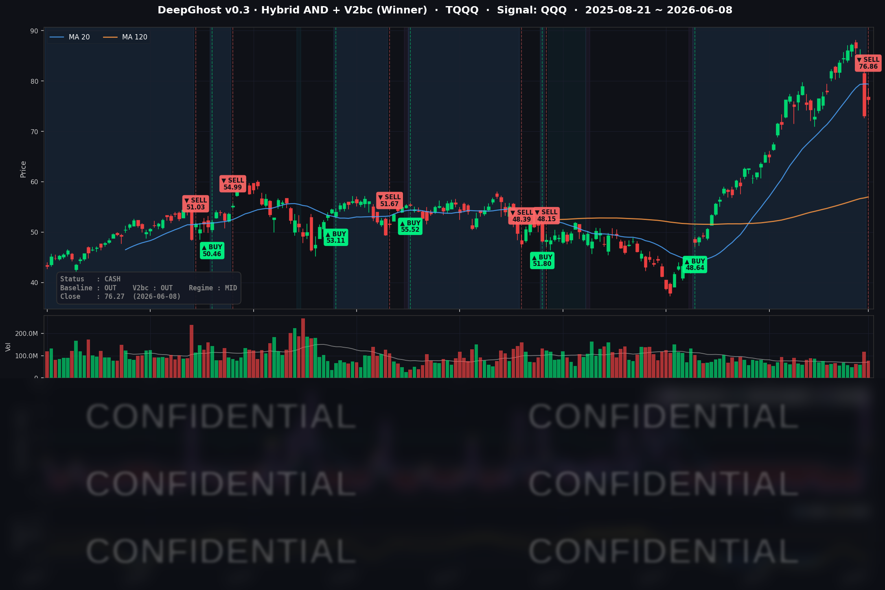

한 줄 요약: 반도체가 일제히 튀어 오른 날, 모델은 오히려 레버리지 포지션을 정리하고 현금으로 한발 물러섰습니다.
📊 오늘의 매매 신호
| 항목 | 내용 |
|---|---|
| 오늘 할 일 | ✅ 아무것도 안 해도 됩니다 |
| 포지션 상태 | 💵 현금 보유 중 (OUT OF POSITION) |
| 현금 보유 기간 | 2026-06-08 ~ (1일째) |
| TQQQ 종가 | $76.27 (+4.41%) |
TQQQ는 6/8 미국 장 시가에 전량 매도되어, 4월 초 진입 이후 약 두 달간의 베타 포지션을 약 +70% 수익으로 정리했습니다. 이제부터는 현금 보유 상태입니다. 장 마감 후 모델 내부적으로는 매수에 가까운 영역으로 다시 내려왔지만, 아직 "지금 사라"는 신규 진입 신호가 켜진 것은 아닙니다. 매수존 진입 ≠ 즉시 매수라는 점을 꼭 기억해 주세요. 시장은 예측하는 것이 아니라 대응하는 것입니다. 앞으로 변동성이 커질 수 있으니 금리와 주가 움직임을 잘 보시되, 한발 물러나 관망하는 자세를 유지하시기 바랍니다. 포모(FOMO)에 휩쓸리지 마세요. 기다리면 기회는 항상 옵니다.
TQQQ 시그널 — OUT OF POSITION
현재 상태: 현금 보유 중 | 신규 매수 신호 없음

오늘 나스닥은 +0.86%, QQQ는 +1.56%, 3배 레버리지 TQQQ는 +4.41% 올랐습니다.
우리 모델은 가격이 아니라 내부 모멘텀을 봅니다. 6/5 반도체 쇼크로 한 번 꺾인 모멘텀은 단 하루짜리 반등으로는 회복되지 않았습니다. 모델 입장에서 6/8의 상승은 "추세 전환"이 아니라 "급락 뒤의 일시적 되돌림(반발 매수)"으로 읽혔습니다. 그리고 바로 다음 날들에는 5월 소비자물가(CPI)라는 큰 이벤트가 기다리고 있습니다. 이벤트 리스크를 코앞에 두고 굳이 레버리지 포지션을 다시 잡지 않는 것 — 이것이 모델의 보수적 판단입니다. 지수가 오르는 날에 오히려 파는 모습이 낯설 수 있지만, 모델은 감정이 아니라 규칙으로 움직입니다.
오늘 미국 시장 — 시황 요약
지수 마감
| 지수 | 종가 | 등락률 |
|---|---|---|
| S&P 500 | 7,405.73 | +0.30% |
| Nasdaq Composite | 25,929.66 | +0.86% |
| Dow Jones | 50,786.01 | −0.16% |
| Russell 2000 | 2,855.42 | +0.77% |
지난주 금요일(6/5) AVGO(브로드컴) AI 가이던스 쇼크로 −4%대 급락했던 나스닥이 하루 만에 반발 매수로 되돌림에 나섰습니다. 나스닥·러셀(소형주)이 다우를 앞선 것은 성장·소형주 선호, 경기방어 대형주 차익실현 패턴입니다.
국채 금리 동향
| 만기 | 수익률 | 전일 대비 |
|---|---|---|
| 3개월 | 3.628% | +0.3bp |
| 5년 | 4.281% | 보합 |
| 10년 | 4.552% | +1.6bp |
| 30년 | 5.024% | +2.5bp |
장단기 금리차(10년−3개월 +92.4bp, 30년−10년 +47.2bp)는 정상적인 우상향 곡선으로 역전 없음. 단기물(3M·5Y)은 사실상 보합이라 연준의 단기 경로 기대는 안정적이고, 장기물만 소폭 올라 커브가 살짝 가팔라졌습니다. 이 정도 변동으로는 주가를 누르지 못했고, 오늘은 금리보다 종목·섹터 모멘텀이 주도한 장이었습니다.
연준 발언 & 금리 패스
- 6월 FOMC(6/16~17) 동결이 거의 확실시됩니다. 시장이 반영한 동결 확률은 99%대로, 이번 회의의 관전 포인트는 금리 결정 자체보다 점도표(dot plot)와 파월 의장 기자회견의 톤입니다.
- 연준 인사들의 최근 기조는 "데이터 의존(data-dependent)"과 신중론으로 모아집니다. 직전 4월 CPI가 +3.8%로 높게 나오면서 인플레이션 둔화 속도에 대한 경계가 유지됐고, 연내 인하 기대는 한 차례 후퇴한 상태입니다.
- 따라서 금리 패스의 키는 6/10 발표되는 5월 CPI입니다. 예상을 밑돌면 인하 기대가 되살아나며 성장주에 우호적, 웃돌면 "higher for longer" 우려가 재점화될 수 있습니다. 모델이 이벤트(CPI) 직전 레버리지 포지션을 잡지 않은 보수적 판단과도 맞닿아 있습니다.
오늘의 핵심 이슈
- 반도체 반발 매수 — 6/5 브로드컴 가이던스 실망發 급락이 "펀더멘털 훼손은 아니다"라는 재평가와 함께 하루 만에 되돌려졌습니다.
- 인텔 +11.19%, 구글 TPU 파운드리 대형 수주 — 구글이 2028년 생산분 TPU 300만 개+를 TSMC 대신 인텔 파운드리에 발주했다는 소식. 엔비디아의 18A 공정 평가도 진행 중이라는 헤드라인이 더해졌습니다.
- 마이크론 +9.87%, HBM 슈퍼사이클 재점화 — 연내 HBM(고대역폭 메모리) 완판 소식에 모건스탠리가 목표가를 두 배로 상향. 6/24 어닝이 분수령입니다.
변동성 & 투자심리
- VIX(변동성 지수): 18.92 (−12.04%) — 6/5 브로드컴 쇼크 때 치솟았던 21.51 스파이크에서 빠르게 진정. 20선 아래로 복귀하며 단기 공포가 한풀 꺾인, 리스크온 분위기를 시사합니다.
- Fear & Greed(공포·탐욕) 지수: 직전 확인값 42(Fear, 공포 구간). 지수 반등과 VIX 급락에도 심리는 아직 "공포" 영역에 머물러 있어, 시장이 이번 반등을 온전히 신뢰하지는 못하는 분위기입니다. 변동성 지표(완화)와 심리 지표(여전히 공포)가 엇갈리는 점은, 6/10 CPI를 앞둔 관망 심리가 깔려 있음을 보여줍니다.
매크로 & 원자재
- WTI 유가: $91.27 (+0.81%) / Brent: $94.35 (+1.35%)
- 금: $4,351.60 (+0.33%)
- 유가 강세는 헤드라인 인플레이션의 상방 압력, 그리고 "연준 인하 후퇴" 서사와 같은 방향을 가리킵니다.
주요 종목 동향
| 종목 | 전일 종가 | 당일 종가 | 등락률 | 비고 |
|---|---|---|---|---|
| INTC | 99.17 | 110.27 | +11.19% | 구글 TPU 300만개+ 파운드리 수주(2028), 엔비디아 18A 평가, 목표가 상향 |
| MU | 864.01 | 949.28 | +9.87% | HBM 연내 완판, MS 목표가 $1,050 상향, 6/24 어닝 앞 베팅 |
| TSLA | 391.00 | 408.95 | +4.59% | 6/6 오스틴 무인 로보택시 상용 개시, 중국 5월 소매 +22.5% |
| AVGO | 385.73 | 396.60 | +2.82% | 6/5 가이드 미스 급락 후 저가매수 반발 |
| NVDA | 205.10 | 208.64 | +1.73% | 반도체 동반 반등, 인텔 18A 검토 수혜 |
| QCOM | 215.94 | 217.77 | +0.85% | 반도체 섹터 동조 강세 |
| NFLX | 82.18 | 82.64 | +0.56% | 특이 이슈 없음 |
| AMZN | 246.03 | 245.22 | −0.33% | 메가캡 약세 동조, 낙폭 제한적 |
| MSFT | 416.67 | 411.74 | −1.18% | 메가캡 차익실현 로테이션 |
| META | 593.00 | 585.39 | −1.28% | 메가캡 차익실현 |
| GOOGL | 368.53 | 363.31 | −1.42% | 메가캡 약세(TPU 발주 주체이나 본주는 하락) |
| AAPL | 307.34 | 301.54 | −1.89% | 커버리지 중 최대 낙폭, 메가캡 로테이션 직격 |
Ghost.AI — Quantitative AI Investment
Model: DeepGhost v0.3 | Transformer-Based Deep Learning
Coverage: 13 tickers | Updated every trading day after US market close
⚠️ 본 자료는 정보 제공 목적으로만 작성되었으며 투자 권유가 아닙니다. 모든 투자의 책임은 투자자 본인에게 있습니다. 과거 성과가 미래 수익을 보장하지 않습니다.
[유의사항]
고스트에이아이 주식회사는 「자본시장과 금융투자업에 관한 법률」 제101조에 따른 유사투자자문업자로 등록된 사업자입니다.
- 본 서비스는 불특정 다수를 대상으로 발행되는 단방향 정보 제공 서비스이며, 투자자 개인의 재산 상황·투자 목적·위험 선호도를 반영한 개별 투자 조언이 아닙니다.
- 고스트에이아이 주식회사는 고객과 쌍방향 의사소통(개별 상담, 맞춤형 자문 등)을 제공하지 않습니다.
- 본 콘텐츠는 투자 권유 또는 매매 주문의 청약·청약의 권유에 해당하지 않으며, 최종 투자 판단 및 그에 따른 손익의 책임은 전적으로 투자자 본인에게 있습니다.
고스트에이아이 주식회사 | 유사투자자문업 등록번호: 제2025-000호